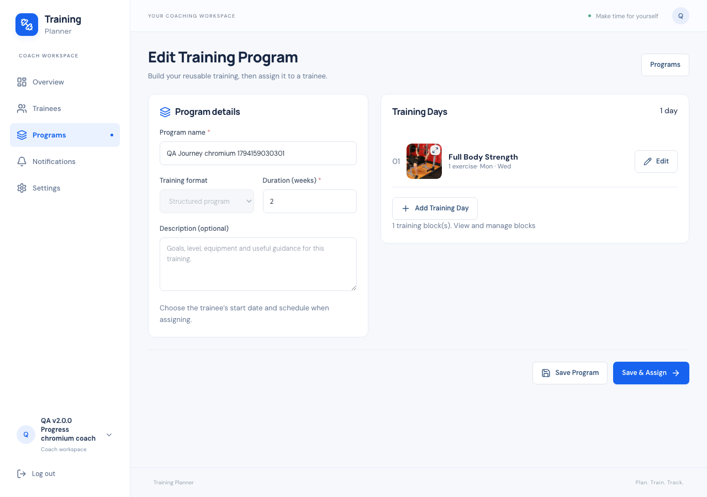
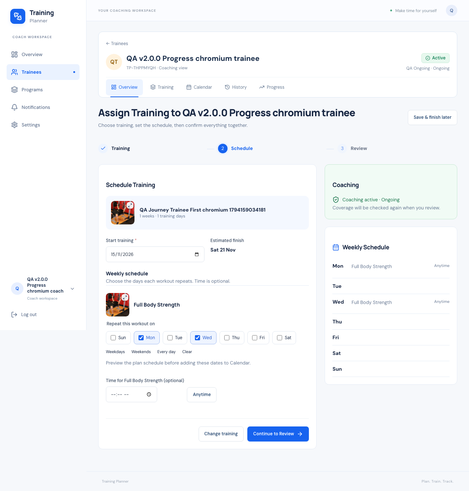
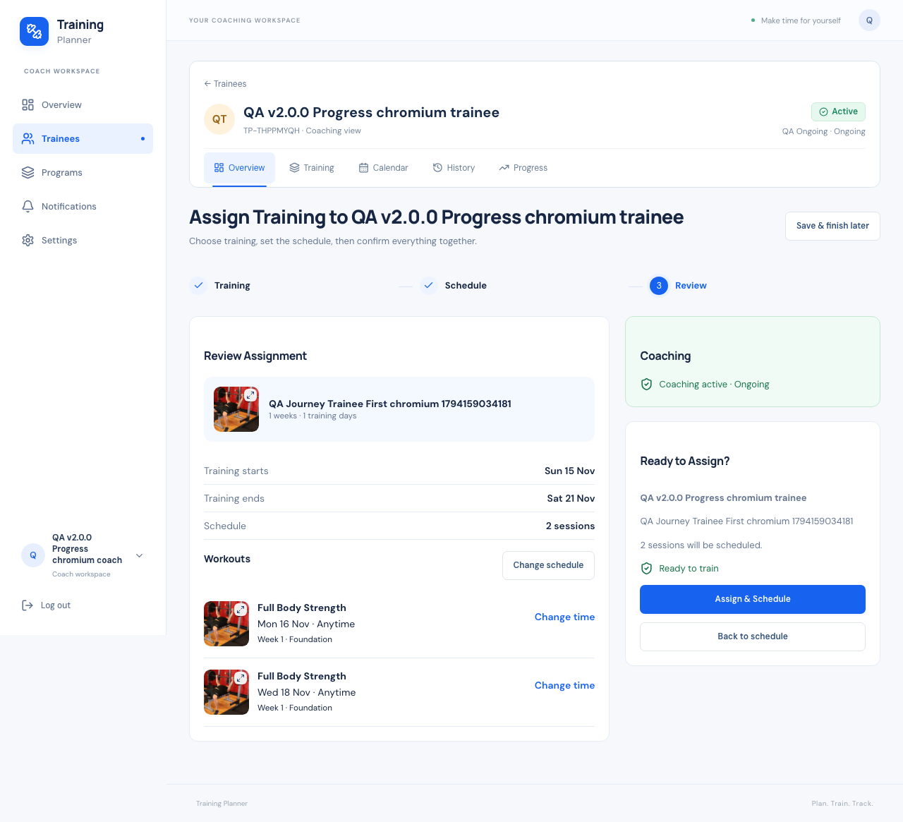
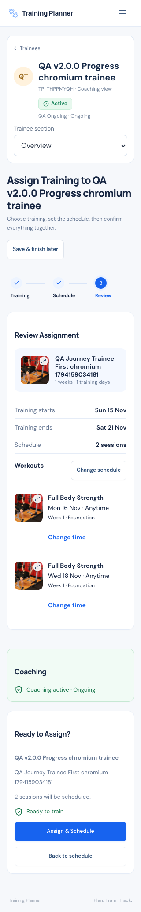

Training Planner · Release report · 8 November 2026
A simpler Coach journey.
v2.3.9 brings program creation, trainee selection and scheduling into one connected flow, while keeping the existing training engines and safety rules.
READY · Verified source · Deployment held
01 / 55
Baseline v2.3.8
The accepted application baseline is v2.3.8, commit
330cd754111da8cd952505e8f7892b799dc0c308. Work
began on main after documentation commit
dad9c80, with a clean tree. The baseline suite
passed 616 tests and its frontend build passed. The
implementation extends that application.
02 / 55
Old Coach journey
Coaches could create a template, leave its editor, select a trainee, assign an independent copy, and then open a separate scheduling flow. The newer atomic setup coexisted with that older assignment screen. Settings also linked to the Personal profile route, so selecting it changed the visible workspace.
03 / 55
New Coach mental model
Program → Trainee → Schedule. For new training: Create → Save & Assign → Choose trainee → Schedule → Review → Assign & Schedule. Starting from a trainee carries that person through creation and returns directly to their Schedule step.
04 / 55
Coach navigation
Overview, Trainees and Programs remain the primary
navigation. Settings and Notifications remain secondary.
Coach Settings now uses /coach/settings;
account editing uses /coach/settings/account;
notifications use /coach/notifications.
Sidebar, avatar and account-menu links preserve Coach
context. Explicit workspace switching still works.
05 / 55
Programs page
The existing paginated Programs page retains live search, type filters, images and full-image previews. Create Program opens the builder. Each template has a direct Assign action alongside View and editing tools. Active-trainee counts now count distinct connected trainees with active assignments, so two legacy copies do not inflate the number.
06 / 55
Program Builder
A dedicated Coach page combines the existing template fields and training-day list. Desktop uses two columns; phones stack them. It stores name, description, training format and existing program duration. The builder does not introduce a separate training model. The mockup’s Level, Goal and Equipment fields are not added as new schema; useful guidance can remain in the description.

07 / 55
Training Days
Add and edit days inside the builder using the existing Training Day / Exercise form in a modal. Library search, thumbnails, full-image preview, sets, reps, duration, supersets and custom uploads reuse the same components and validation. Day rows show thumbnails, exercise counts and weekdays. Existing block editing remains available from the program detail screen.
08 / 55
Save Program
Save Program writes only the reusable Coach template and returns to its detail page. Opening the first day editor first persists the template so the existing day endpoint can reference it; the browser URL becomes the saved edit URL. Reloading returns to that template instead of starting a duplicate. No trainee assignment, run or Calendar session is created by builder saves.
09 / 55
Save & Assign
After saving, Save & Assign opens the eligible-trainee list immediately. When creation began from a trainee, it skips that list and returns directly to their schedule. The action stays disabled until at least one training day exists.
10 / 55
Existing Program Assign
Assign on a program opens connected trainees immediately. Selecting a trainee goes to Schedule, with that template already selected. The old GET assignment URL redirects into the same atomic journey. Its existing protected POST endpoint remains for backward compatibility; the redesigned UI does not use it.
11 / 55
Choose Trainee
The list shows identity, Coaching status, current training and the next action. Desktop uses the existing table; mobile uses cards. A trainee with the same active source assignment gets Already assigned and View, avoiding accidental extra copies.
12 / 55
Live trainee search
The existing debounced React/Inertia search remains in use. Search accepts name or Training Planner ID and updates results without a Search button. Clearing search restores the connected-trainee list. Pagination and server-side authorization remain unchanged.
13 / 55
Trainee identity
The selected trainee’s name, Training Planner ID and Coaching context remain visible in scheduling and review. The existing initials avatar is reused. Starting a program from a trainee adds a context banner to the builder; no profile photographs are invented.
14 / 55
Duplicate assignment protection
Already assigned is visible in both trainee selection and template selection. Existing copies are linked for viewing, and appropriate existing assignment/run/session records are reused by CoachSetup. A distinct intentional assignment after completed setup requires a new reviewed draft and rotates the token. The superseded token cannot activate the new draft.
15 / 55
Schedule page
Training, Schedule and Review form one focused flow. Schedule shows the chosen program, start date, weekly workout controls and Coaching coverage. Desktop places controls on the left with coverage and weekly summary on the right. Panels use the same content width as the trainee header.




16 / 55
Weekday/time configuration
Each day keeps the existing weekday picker, including Weekdays, Weekends (Friday/Saturday), Every day and Clear. Optional times can be cleared with Anytime. Adjustments remain draft choices and apply only to the eventual assigned copy. The reusable Coach template is not rewritten. The weekly summary normalizes numeric/string weekday values.
17 / 55
Anytime today
An untimed workout continues to mean Anytime on its scheduled date. Existing WorkoutDate semantics remain authoritative in Asia/Riyadh: untimed today is not elapsed before local midnight; a timed workout uses its actual timestamp. No fake midnight time or reminder time is added.
18 / 55
Subscription background UX
When coverage is healthy, the coach sees one compact green Coaching active through date / Ongoing state. Attention is requested only for activation, resumption, renewal or insufficient coverage. Coaching and schedule are reviewed together; there is no required detour to subscription administration.
19 / 55
Coaching activation
A new Coaching period starts today while training may start next week. Review requires an explicit Activate coaching today choice before the final Assign & Schedule action. Browser verification confirmed the start-date separation and one subscription, one assignment, one run and eight scheduled workouts in each disposable scenario.
20 / 55
Coaching resume
Paused Coaching shows an explicit Resume coaching today choice in the same flow. Resumption keeps the existing subscription period and ongoing coverage when applicable. Browser cases and concurrent Resume checks passed. A paused training program remains a separate lifecycle state.
21 / 55
Coaching renewal
Ended or expired Coaching uses Renew coaching today. Renewal creates a new period; the previous ended period remains unchanged. Browser verification found two periods for renewal, with exactly one new assignment/run/schedule. Existing concurrency tests verify double-renew does not create duplicate periods.
22 / 55
Coverage extension
When Coaching ends before training finishes, review shows current coverage, the required end and extension days. Extend coaching through the required date refreshes and re-signs the preview. Assignment stays disabled until the issue is reviewed. No workouts are silently omitted, moved or truncated to fit coverage.
23 / 55
Coaching Package behavior
Package selection stays inline when relevant. Create Coaching Package opens the existing small modal and returns without losing trainee, program or dates. A single available package can be preselected for new Coaching. The browser exercised a seven-day package with a longer program and verified that only the subscription was extended; the reusable package stayed seven days.
24 / 55
Final summary
Review shows the selected training, training start/end, actual schedule count, compact workout rows and Coaching coverage. Workout rows include dates, optional times, week/block context and actionable issues. Large schedules can expand beyond the initial rows. Existing schedules are clearly described as being kept.
25 / 55
Assign & Schedule
One final action submits the signed reviewed setup and returns to the selected trainee. The existing atomic service determines the actual activate/resume/renew/reuse wording and scheduled outcome. Save & finish later stores only draft choices; a browser reload verified that chosen dates are preserved.
26 / 55
Atomic orchestration
CoachSetup remains the single coordinator. CoachAccess, CoachingSubscriptions, TrainingPlanDuplicator, ProgramSchedule and PlanSchedule still own their respective authorization, coverage, copying and scheduling behavior. Existing transaction locks, consent checks, signed previews, rollback and copied-media cleanup remain intact. Draft/preview still create no active domain records.
27 / 55
Idempotency
The same completed activation token returns the same result while its completed draft remains current. Intentional new training uses a fresh token and optimistic revision; stale revisions and superseded tokens reject safely. Real-process races verified one result per assignment and no mixed draft state.
28 / 55
Existing assignment reuse
Source-specific matching remains authoritative; setup does not choose an unrelated assignment merely because it is newest. Legacy partial setups can use Assigned training in the same flow. Existing active subscriptions are reused and never shortened. Existing MySQL/SQLite regression tests cover partial, stale, revoked-consent and forged-resource cases.
29 / 55
Existing Program Run protection
Existing runs and scheduled sessions are preserved rather than restarting Week 1. The assignment flow explains when training is already scheduled and points to existing schedule controls. Pause, resume, shift, end and history behavior continue through their existing services and pages.
30 / 55
Program-first flow
Verified in Chromium and WebKit: Programs → Create Program → embedded day/exercise editing → Save & Assign → immediate trainee results → live search → Schedule → Review → Assign & Schedule → Current Training. Existing template assignment uses the same shorter path from Assign.
31 / 55
Trainee-first flow
Verified in both engines: trainee → Assign Training → Create New Program → builder with trainee context → Save & Assign → Schedule directly → Review → trainee Overview. A second intentional program after completed setup succeeded without duplicating the prior run or subscription.
32 / 55
Current Training trainee Overview
One Current Training section identifies the authoritative current assignment, its image, week/progress and actions. Calendar and Edit Schedule remain accessible. Other legitimate assignments appear separately under Other Training Assigned By You. The existing next-workout, weekly activity, Coaching status and Progress information remain available.
33 / 55
Coach privacy
TrainingContext and CoachAccess remain the server-side source of truth. Coach A can access only accepted relationships and their own templates/assignments; personal and other-Coach training remains excluded. Added tests reject foreign templates and unconnected trainee IDs. Settings routes remain Coach-only; trainee self-promotion is still disabled.
34 / 55
Thumbnails in the new flow
PlanThumbnail, TrainingThumbnail and ExerciseThumbnail are reused for program cards, chooser headers, assignment options, day rows, review rows, library exercises and Current Training. Setup day thumbnails use already-loaded exercises rather than extra queries. Personal thumbnails, historical snapshot images, frozen runs and fallback behavior remain covered by regression tests.
35 / 55
Image preview behavior
Images open the existing full-image modal independently of selection and navigation. Tests exercised Escape/close, focus restoration, nested day/exercise/library dialogs, image loading, missing-image fallback and unchanged program selection after viewing an image. No image button is nested inside another button, link or selection label in the tested journey.
36 / 55
Mobile UX
The journey was exercised in Chromium and WebKit at 320×480, 360×800, 375×812, 390×844, 430×900, 768×1024 and 1280×900. Builder, day editor, trainee choice, training choice, schedule, review and trainee Overview had no horizontal overflow. Phone review stacks schedule, Coaching and the final action; short-screen controls remain scrollable and reachable.
View 320 × 480 browser capture

37 / 55
Accessibility
The redesign retains semantic buttons, labeled inputs, native radio/checkbox selection, headings, focus handling and the shared modal. Time inputs and Anytime buttons are separate controls. Keyboard/image-preview regression checks passed. This is browser-based verification, not a claim of a complete assistive-technology audit or physical-device test.
38 / 55
Query/performance
Measured with 26 accepted trainees, a 12-week program, 20 exercises and 48 proposed sessions. Read paths stayed bounded; no full workout history was loaded for setup. Times below are local isolated MySQL request timings, not production latency guarantees.
| Request | Queries | MySQL time |
|---|---|---|
| Programs | 6 | 2.99 ms |
| Builder | 8 | 3.86 ms |
| Choose Trainee | 13 | 12.51 ms |
| Schedule | 23 | 9.51 ms |
| Overview | 36 | 15.46 ms |
| Preview | 18 | 6.4 ms |
| Activation | 143 | 53.43 ms |
Activation includes the transaction, independent copy, one run and 48 actual inserts. The read-only preview uses 18 queries.
39 / 55
Architecture
No migration and no new domain table or service family. New Coach ProgramBuilder composes the existing day editor. Existing template/day endpoints add JSON responses for this embedded UI; Personal Inertia responses are preserved. CoachSetup adds intentional new-draft handling and day-image payloads. Settings adds context-preserving routes around existing controllers.
40 / 55
Bugs found
Confirmed: Settings/Notifications routes could leave Coach context; the older Assign screen split assignment from scheduling; completed setup blocked subsequent intentional assignments; template entry could reset draft dates; string weekdays could leave the visual weekly summary empty; legacy copies could inflate the active-trainee count. The dependency audit also found six advisories published after v2.3.8.
41 / 55
Bugs fixed
Context-preserving Settings/Notifications routes, unified assignment navigation, fresh-token handling for new intentional work, draft date preservation, normalized weekday display and distinct trainee counts are implemented. Builder refresh now reopens the saved template. Time-control nesting was removed. Three Symfony dependencies were patched from 7.4.21 to 7.4.23; the final audit is clean.
42 / 55
SQLite
Complete suite: 624 passed · 12,312 assertions · 15.71 seconds. Eight focused CoachJourney feature tests cover the builder, draft entry/reload, second assignment, Settings context, foreign resources, distinct counts and representative query bounds. Existing authorization, rollback, dates, Personal and Coach suites remain included.
43 / 55
MySQL
Complete isolated MySQL suite:
624 passed · 12,312 assertions · 36.96 seconds.
It ran against training_planner_test, never the
original local database or production. This validates the
same code path against a real MySQL connection, including
locks, dates and JSON draft behavior.
44 / 55
Concurrency
All six existing real-process concurrency suites passed: Coaching 17 checks, RecurringSchedule 4, Program 10, ProgramControl 15, Notification 10 and CoachSetup 33 — 89 checks total. The added race assigns a different program after completed setup with concurrent retries, retaining one subscription, both legitimate assignments and the original sessions.
45 / 55
JavaScript
38 tests passed, 0 failed. Existing client logic tests remain intact. The new UX is primarily covered with real browser journeys rather than tests that mirror JSX implementation.
46 / 55
Browser tests
626 passing checkpoints across Chromium and WebKit. Seven scripts cover the new journey, inline Coaching lifecycle, thumbnail coverage, image previews, existing program-card layout, full Personal/Coach lifecycle and PWA/notifications. Fixture-dependent card tests used fresh disposable accounts after new assignments changed the original fixture’s expected run count.
| Suite | Chromium | WebKit |
|---|---|---|
| coach-journey | 84 passed | 84 passed |
| coach-journey-coverage | 12 passed | 12 passed |
| full-lifecycle | 26 passed | 26 passed |
| program-card-layout | 31 passed | 31 passed |
| pwa-notifications | 22 passed | 22 passed |
| thumbnail-coverage | 63 passed | 63 passed |
| thumbnail-preview | 75 passed | 75 passed |
47 / 55
Production build
npm run build passed. Vite generated the
production assets successfully. No deployment was performed.
PWA tests exercised actual service-worker registration,
public-asset caches, offline fallback and reconnection; push
permission/provider behavior was mocked where required, and
no real push delivery is claimed.
48 / 55
Formatting/audit
Pint on changed PHP files, Prettier on changed frontend/test files, Composer validate --strict, Composer audit, platform requirements and git diff --check passed. Composer audit initially reported six advisories in http-foundation/http-kernel/routing; the targeted compatible update changed only those three packages to 7.4.23. See Symfony’s security advisory and the URL-generation advisory.
49 / 55
Data/media integrity
Local QA cleanup removed 26 disposable accounts and 348 newly created test images, including their dependent relationships, training, sessions and notification records. All 22 original table fingerprints and 44 original media SHA-256 hashes matched the pre-test snapshot. Credential ledgers were removed. Production data/media/environment were not modified.
50 / 55
Files changed
The source changes are listed below. Generated evidence contains no passwords or user data. Detailed raw test output remains in the private local QA folder; the portable evidence file contains the measured results needed to review this release.
- app/Http/Controllers/CoachAssignmentController.php
- app/Http/Controllers/CoachController.php
- app/Http/Controllers/CoachSetupController.php
- app/Http/Controllers/ProfileController.php
- app/Http/Controllers/TrainingDayController.php
- app/Http/Controllers/TrainingPlanController.php
- app/Services/CoachSetup.php
- app/Services/CoachWorkspaceSummary.php
- composer.lock
- resources/css/journey.css
- resources/js/Components/AppLayout.jsx
- resources/js/Features/CoachingUI.jsx
- resources/js/Pages/Coach/ChooseTrainee.jsx
- resources/js/Pages/Coach/ProgramBuilder.jsx
- resources/js/Pages/Coach/SetupTrainee.jsx
- resources/js/Pages/Coach/Trainee.jsx
- resources/js/Pages/Coaching/Setup.jsx
- resources/js/Pages/Profile/Edit.jsx
- resources/js/Pages/Programs/Show.jsx
- resources/js/Pages/TrainingDays/Form.jsx
- resources/js/Pages/TrainingPlans/Index.jsx
- routes/web.php
- tests/Browser/coach-journey-coverage.mjs
- tests/Browser/coach-journey.mjs
- tests/Browser/full-lifecycle.mjs
- tests/Browser/pwa-notifications.mjs
- tests/Browser/thumbnail-coverage.mjs
- tests/Concurrency/CoachSetupConcurrency.php
- tests/Feature/CoachJourneyTest.php
- tests/Feature/CoachWorkspaceTest.php
- tests/Feature/StabilizationTest.php
Also added: this report and
docs/v2.3.9/ screenshots/evidence.
51 / 55
Commit
Application commit: Recorded after the release commit. The immutable release is identified by v2.3.9. A later report-only commit may record the final hash without moving that tag.
52 / 55
v2.3.9 tag
An annotated immutable v2.3.9 tag identifies
this verified application release. Earlier tags, including
v2.3.8, are preserved; no force push or tag replacement is
used. Final tag/remote verification is recorded after
commit.
53 / 55
Deployment status
NOT DEPLOYED. Section 130 of the supplied v2.3.9 brief explicitly requires stopping after implementation, testing, report and tag until Ahmad says deploy. A read-only production check on 8 November returned HTTP 200 for login and health; both public app assets matched the archived v2.3.8 release. No production login, database migration, upload, environment, VAPID, cron or deployment change was made.
54 / 55
Known limitations
Browser emulation was used; no physical phone or real push delivery was tested. Push configuration remains unchanged. Existing block editing stays in the program detail flow. The builder reuses existing template fields; it does not introduce new Level/Goal/Equipment metadata or a second plan-discovery system. The protected legacy assignment POST remains for compatibility, while the new UI exclusively uses atomic setup. Local timings are illustrative. Deployment and live smoke tests await the explicit deploy instruction.
55 / 55
READY / NOT READY
READY — IMPLEMENTED, TESTED AND TAGGED. NOT DEPLOYED. No known BLOCKER or HIGH issue remains in the verified source. Release delivery is intentionally held. On an explicit deploy request, use the existing safe Hostinger procedure, fresh backups, live disposable smoke tests, cleanup and integrity verification. Stop here until that request.